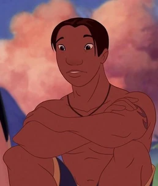
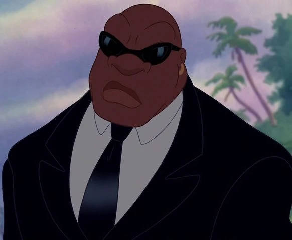
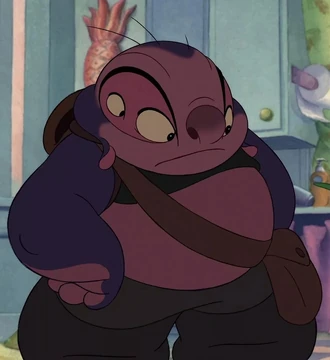
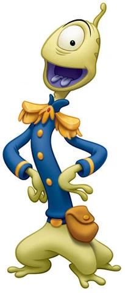
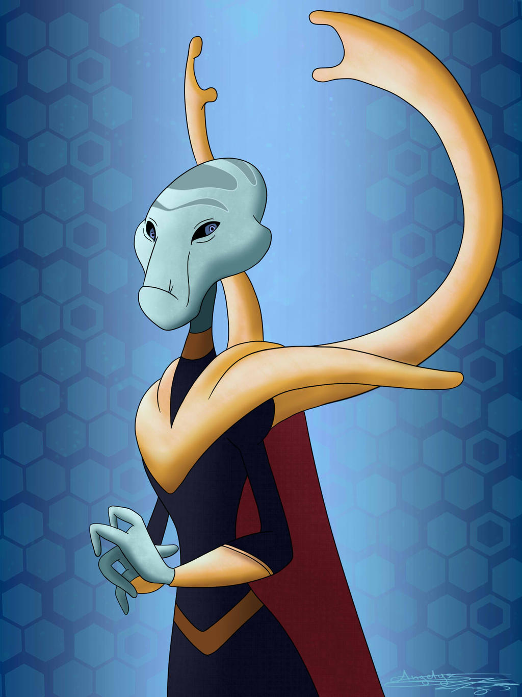

Lilo é uma garota que adora cuidar de animais menos favorecidos. Lilo tem o costume de coletar lixo reciclável nas praias para, com o dinheiro recebido, comprar comida para peixes. Até que, em um belo dia, ela encontra um cachorro e decide adotá-lo. Entretanto, este cachorro na verdade é Stitch, um ser alienígena que é um dos criminosos mais perigosos da galáxia. Agora, Stitch esconde quatro de suas seis pernas e decide se fazer passar por um cachorro comum, ficando amigo de Lilo.
Nani Pelekai
Ela é a irmã mais velha de Lilo e assume a responsabilidade de cuidar dela após a morte de seus pais. Nani é conhecida por sua força, amor e dedicação à sua irmã mais nova, enquanto tenta equilibrar as dificuldades da vida e as travessuras causadas por Stitch.
David Kawena

Ele é namorado de Nani e bom amigo da irmã mais nova de Nani, Lilo.
Cobra Bublles

Em Lilo & Stitch, Cobra Bubbles é um agente da CIA que trabalha como assistente social, ele é o escolhido para assistir à situação entre Lilo e Nani Pelekai. Anteriormente, Bubbles foi o agente envolvido no incidente Roswell em 1973, onde conheceu a Grande Conselheira.
Jumba Jookiba

Jumba Jookiba cientista, inventor e um gênio, Jumba é um alienígena grande e obeso com quatro olhos, dois grandes e dois pequenos. Ele era bem malvado, até conhecer Lilo e sua turma, passando a mostrar sua personalidade cômica e cativante.
Pleakley

Ex-membro da Federação Galáctica, Pleakley relutantemente tornou-se parceiro de Jumba Jookiba quando foi forçado a ajudá-lo na captura do Experimento 626 que escapou .
Grand Councilwoman

A Grande Vereadora é a líder da Federação Galáctica Unida na franquia Lilo & Stitch . Como a figura de autoridade mais poderosa da galáxia, outros ocasionalmente se referem a ela como "Sua Majestade" e "Sua Alteza". No geral, ela é razoável e bem-intencionada, mas tem pouca paciência com criminosos. Seu nome verdadeiro é desconhecido, pois ela é referida apenas por seu status.
.png "Outra figura")
.png "Outra figura")